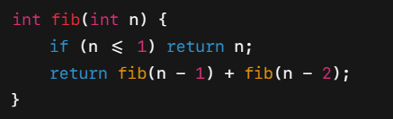
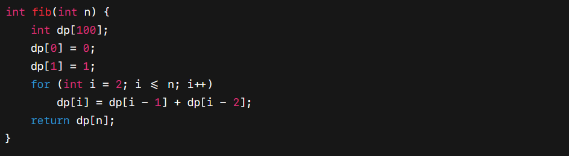

I. Khái niệm
Dynamic programming (Quy hoạch động)
là một kỹ thuật lập trình được sử dụng để giải quyết những bài toán
có tính chất lặp lại. Thay vì giải đi
giải lại cùng một bài toán nhiều lần như trong đệ quy, ta lưu kết
quả trung gian để sử dụng lại, từ đó giảm được thời gian tính toán.
Tóm tắt ý tưởng chính của quy hoạch động:
1. Sử dụng một mảng dp để lưu những giá trị của bài toán nhỏ và
xác định xem dp[i] biểu diễn cho
cái gì. Ví dụ với bài toán Fibonacci, dp[i] biểu diễn cho số
fibonacci thứ i.
2. Dựa vào trạng thái nhỏ hơn để tính trạng thái hiện tại
3. Khởi tạo giá trị ban đầu
4. Tính dần kết quả theo thứ tự tăng hoặc sử dụng đệ quy có nhớ
(memoization).
5. Trả về kết quả cuối cùng
Ví dụ: Tính số Fibonacci thứ n
Cách 1: Đệ quy (rất chậm)

Cách 2: Quy hoạch động

Khi nào cần dùng quy hoạch động?
Bạn cần dùng quy hoạch động nếu bài toán có thể chia thành các
bài toán nhỏ hơn, kết quả bài toán lớn phụ thuộc vào bài toán con,
các bài toán con trùng nhau.
II. Bài tập
Số fibonacci thứ n được tạo nên từ tổng của 2 số fibonacci của n - 1 và fibonacci của n - 2. Số fibonacci thứ nhất và thứ hai là 1.
Input: n
Output: Số fibonacci thứ n
Ví dụ:
| Input | Output |
|---|---|
| 3 | 2 |
| 1 | 1 |
Số tribonacci thứ n được tạo nên từ tổng của 3 số tribonacci của n - 1, tribonacci của n - 2 và tribonacci của n - 3. Số tribonacci thứ nhất là 0, thứ hai là 1, thứ 3 là 1.
Input: n
Output: Số tribonacci thứ n
Ví dụ:
| Input | Output |
|---|---|
| 3 | 1 |
| 1 | 0 |
Bạn được cho một cái cầu thang có n bước. Mỗi lần bước bạn có thể bước 1 bước hoặc bước 2 bước lên trên cầu thang.
Input: n
Output: Số cách để leo lên cầu thang
Ví dụ:
| Input | Output | Giải thích |
|---|---|---|
| 3 | 3 | Có 3 cách để leo lên cầu thang: {1, 1, 1}, {1, 2}, {2, 1} |
| 5 | 8 |
Có 8 cách để leo lên cầu thang: {1, 1, 1, 1, 1}, {1, 1, 1,
2},
{1, 1, 2, 1}, {1, 2, 1, 1}, {2, 1, 1 ,1}, {1, 2, 2}, {2, 1, 2}, {2, 2, 1} |